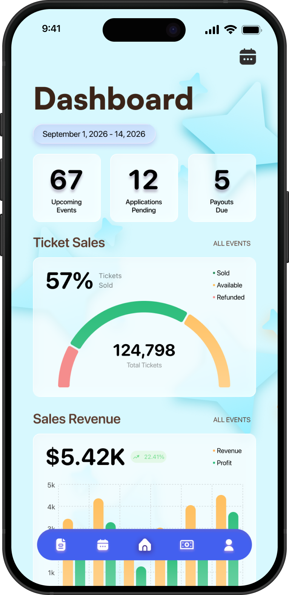
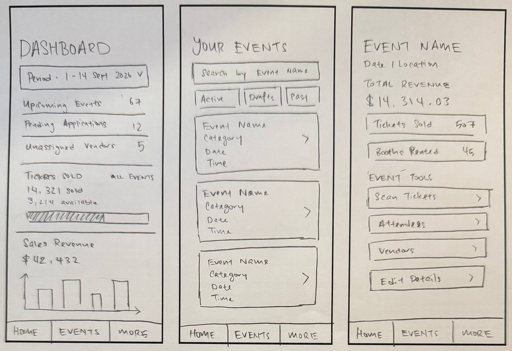
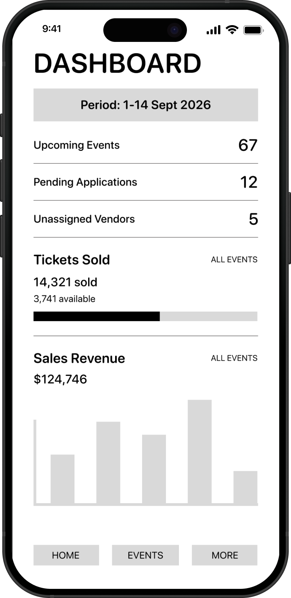
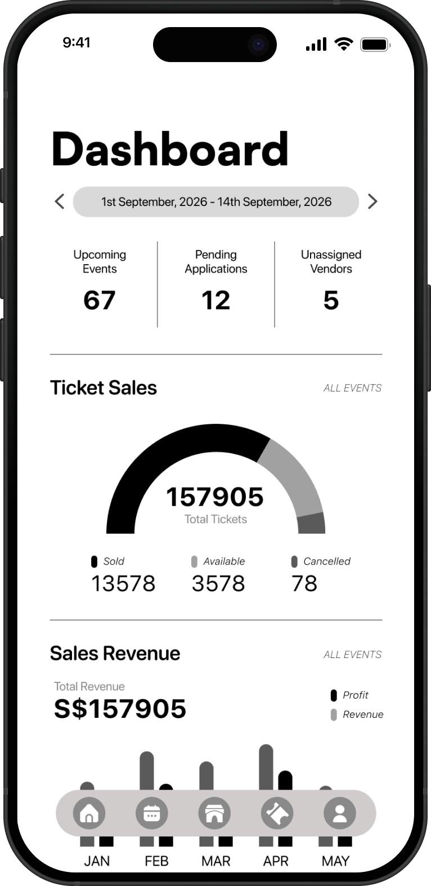
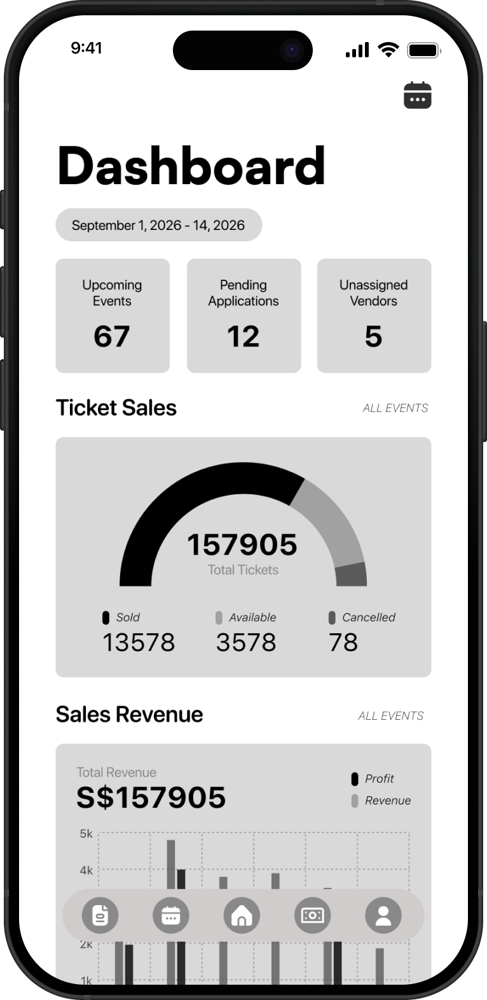
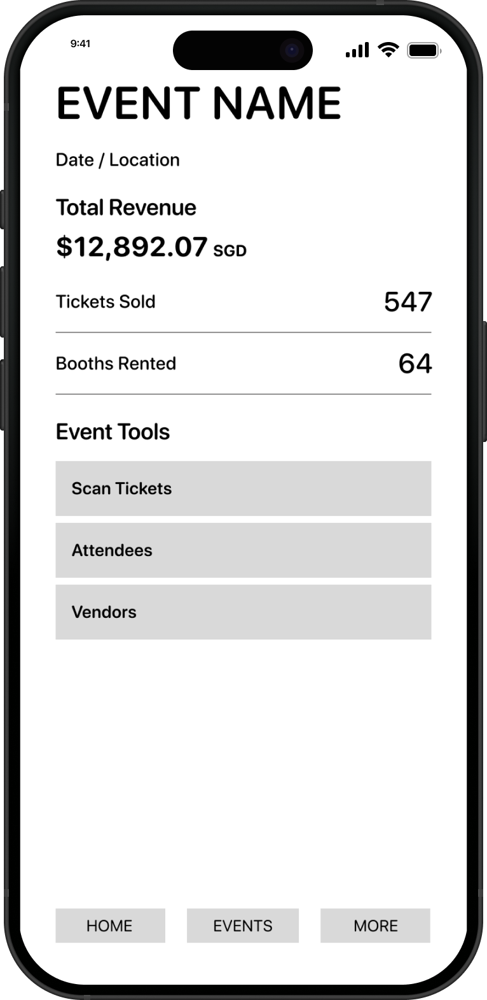
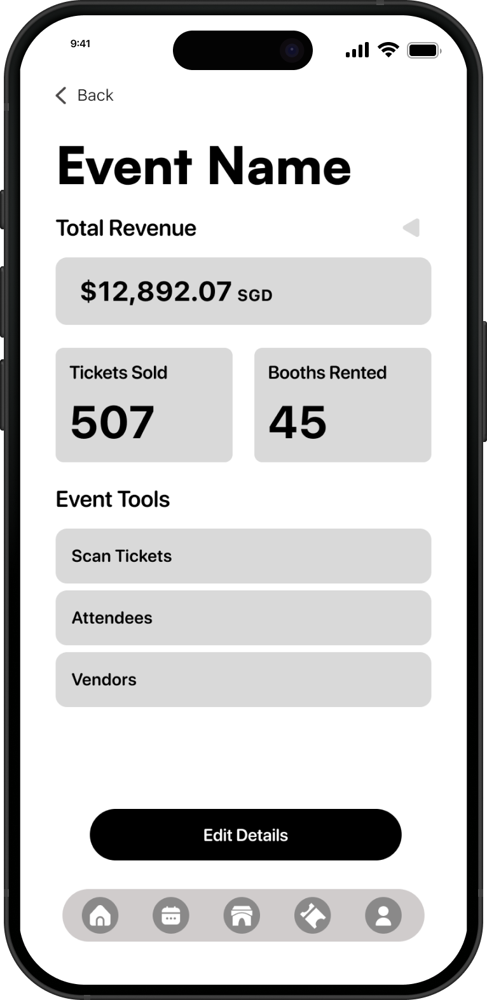
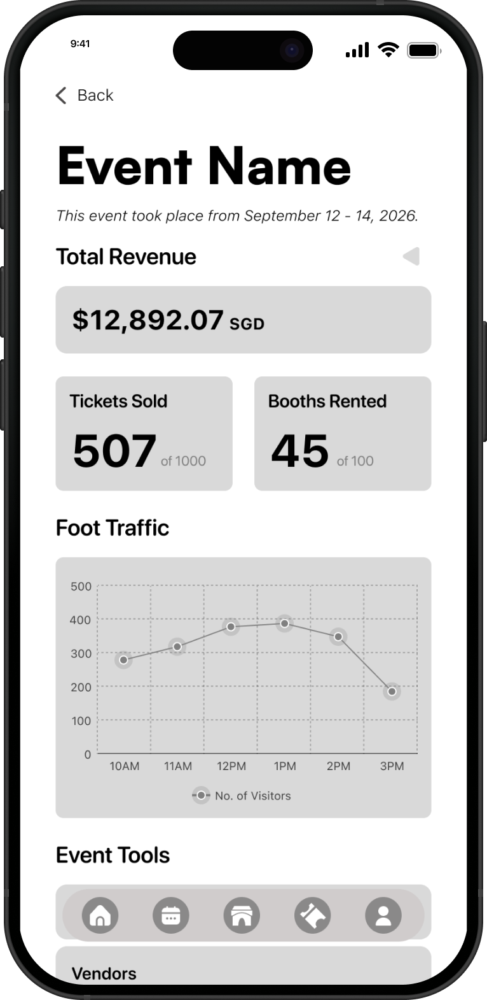

CONVEX
I designed the organiser experience for CONVEX, a mobile platform for conventions and markets. My work focused on helping organisers monitor event performance, find the event they need, and review vendor applications.



What organisers need to do between events
CONVEX was designed around three roles: attendees, vendors and organisers. My teammates designed the attendee and vendor experiences, and I designed the organiser interface. On a phone, that meant supporting two different jobs: checking performance at a glance and following up on a specific event or application.

The team tested organiser tasks such as reviewing a booth application, assigning a booth number and finding an event’s revenue. I used the early paper rounds to refine how people moved between those tasks and what each screen needed to show.
From weekly arrows to a calendar picker
The earliest wireframe showed the reporting period as a date label. In low-fi V1, I added left and right arrows so organisers could move the reporting window one week at a time. That works for checking nearby weeks, but reaching a date further away takes repeated taps.



In low-fi V2, I replaced the arrows with a calendar button so organisers could pick a date range directly. The selected range stayed visible below the dashboard title so organisers could see which period the figures referred to.
Show what makes up the total
The first event overview showed a single revenue figure. Testers could find the total, but they couldn’t see which sources contributed to it. I added an expandable breakdown on the same screen and grouped tickets sold and booths rented into separate cards. Organisers could check the total at a glance, then open the breakdown when they needed more detail.



Give upcoming and past events different priorities
The same event overview was doing two jobs. Testers couldn’t always tell whether an event was upcoming or completed, and the ticket and booth counts lacked capacity for comparison.


I added a countdown and grouped editing tools on upcoming events. For past events, I displayed the event dates and a foot traffic chart. I also showed total capacity alongside the ticket and booth counts so organisers could see how much availability remained.
What I took into the final prototype
The final Figma prototype connects the organiser dashboard, event overview and application review. The date control taught me to design around how someone searches. Arrows work for browsing nearby weeks, while a calendar lets organisers jump to the exact period they need.
If I tested the prototype again, I’d ask organisers to find revenue for a named event and date range, then observe where they pause or ask for help.